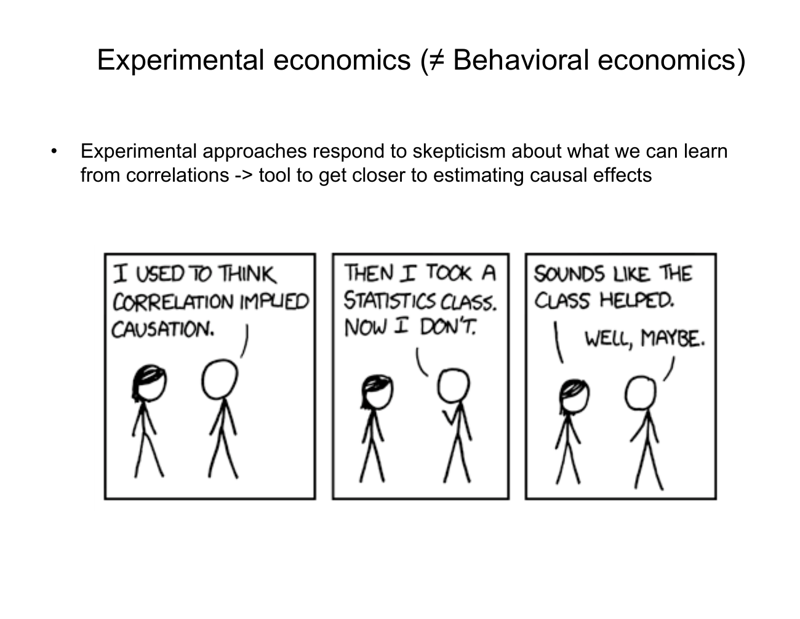

Distinguish behavioral explanations from experimental evidence
Explanation, worked examples and practice
Outcome and conditions
Explain a proposed behavioral mechanism and how evidence could test it, using a fresh hypothetical case and respecting the introduction’s lack of formal later-topic models.
Study conditions, assessment scope and sources
- R1: Define behavioral economics as specific psychological amendments with precise falsifiable predictions; give all five introductory directions.
- R2: Distinguish the model/explanation question from the empirical-method question and classify the supplied illustration.
- R3: Explain why an association or before/after sequence lacks the counterfactual needed for a causal conclusion; explain what controlling information, incentives and context contributes without guaranteeing causality.
- R4: Connect theory or intuition, evidence and application; frame a conditional prediction and state that the hypothetical example is not an actual result.
Finished-note locations:
- What changes in a behavioral model
- A field of questions and a method of evidence
- Theory, evidence, and applications in this course
Use P002/V002/ingest 3 and O001-C1, objective revision 2. Supported instruction can use this block and linked notes. Independent acquisition and delayed attempts are closed note, with blank paper and pen only; no calculator, device, AI, hint or key exposure. Present only the question before the learner responds; keys remain teacher-side. Unknown help/access is unscorable for independence. Hypothetical inputs instantiate supported mechanisms and are not empirical findings.
Prerequisites and checks
Check the prerequisites
No prior course objective is required; the focused foundational diagnostic below establishes only entry conditions.
No prior course objective required. O001-P1 v1, foundational reading check: “A model predicts an action; an observation records an action. Which is a prediction and which is evidence?” Key: model statement is prediction; recorded action is evidence used to confront it. Pass only if both roles distinguished; partial if only one; fail if reversed. Repair: read Motivation, intuition, and definitions and explain the definition of falsifiable before proceeding. This check does not count as acquisition.
Entry checks have item version v1, and pass/partial/fail plus repair routes above. Their exact limited outcomes do not certify the upstream objective. A waiver requires actual committed compatible evidence, never familiarity or assumed mastery. If a diagnostic fails, use its named prepared explanation and support before continuing; do not cycle through full upstream independent items just to diagnose.
Motivation, intuition, and definitions
A plausible story is not sufficient: the mechanism must generate a prediction that evidence could contradict. Behavioral economics concerns what explains choices; experimental economics concerns how evidence is generated. They can be used together. The five introductory directions are broader motivations, imperfect self-control, imperfect attention, inaccurate beliefs, and preferences that need not remain fixed. These are distinct amendments, not one universal claim of irrationality.
Visual support:
- Introduction slide 06 correlation — inspected qualitative/source support; retrieve the finished note’s adjacent explanation.
Explanation steps
- Begin with a conventional model’s assumptions, then identify the precise proposed amendment. Fairness alters motivation; available but overlooked information concerns attention; incorrect perceptions concern beliefs. A planned but unimplemented choice concerns self-control; a change in motivation concerns preferences’ stability.
- Derive a conditional prediction from that amendment. A prediction must state an observable contrast and conditions under which it could be false. No formal equation for the later categories is supplied here.
- Ask separately how the evidence is obtained. Observing an undisturbed process preserves its natural setting, but association does not reveal what would happen if one variable changed while other relevant circumstances were controlled.
- A counterfactual is the outcome under an alternative situation. A before/after anecdote lacks a comparison for what would have happened without the intervention. Controlled information, incentives and context can move research closer to causal effects, but the introduction supplies no full identification design or estimator and no guarantee for every experiment.
- Use theory/intuition to generate the prediction, evidence to confront it, and an application to ask what a supported result would imply. The last step remains conditional until evidence exists.
Read the full explanation
Reading context
Deliver these complete reused passages before the worked example; earlier concise prompts are checkpoints, not substitutes. Necessary prerequisites use the complete prepared lessons specified above.
Source passage
Origin: reused complete checked passage Behavioral economics and experimental economics; fingerprint 31bef5277db2c184aebb25798e863489fbb1d3c09f0b61fe2fda9ccad0e8c3c1. Heading depth alone is adapted.
Behavioral economics and experimental economics
How should economics explain choices when people care about fairness, have difficulty following through on plans, overlook information, or hold inaccurate beliefs? Behavioral economics answers this question by changing particular assumptions about decision-making while retaining economic modeling and testable predictions. Week 1 introduces that approach and distinguishes it from experimental economics, the method used to gather much of the course's evidence. Introduction, PDF slides 2–3, 5–6
Return to the course's Week 1 section.
What changes in a behavioral model
Behavioral economics uses variants of traditional economic assumptions, often motivated by psychology, to explain and predict behavior and inform policy. The lecture also calls it psychology and economics or psychological economics. The word “behavioral” does not mean that other economists ignore behavior. It identifies the use of psychological insights, particularly cognitive psychology and social psychology, to improve assumptions about how people make choices. Introduction, PDF slide 2
The lecture presents this as amendments to traditional economics. Economic models still need precise, falsifiable predictions: predictions that evidence could show to be wrong. Broadening the assumptions is useful when it explains observed choices more accurately, rather than merely making a story sound plausible. Perfect rationality is one classical assumption that the lecture says need not be retained in every model. It does not claim that every traditional model fails or that mathematical modeling should be abandoned. Introduction, PDF slide 3
The lecture identifies five directions for amendments. They concern different parts of a decision, so they should not be collapsed into a single claim that people are “irrational.” The explanations below unpack the lecture's categories; the introduction does not yet provide their formal models. Introduction, PDF slide 3
| Direction in the lecture | What part of a choice it brings into view |
|---|---|
| Broader motivations: fairness, social preferences, group identity, social norms | A person's motivation can include the treatment of others or expectations associated with a group, alongside their own material outcome. |
| Imperfect self-control | Carrying out a plan can itself be difficult; an intended choice and a later action need not coincide. |
| Imperfect attention | Information can be available without receiving the decision-maker's attention. |
| Inaccurate beliefs | The decision-maker's view of the situation can differ from the relevant facts. |
| Preferences may not be fixed | The motivations used to explain choices need not be treated as unchanging. |
These categories organize later lectures rather than establish particular empirical results in Week 1. For example, a fairness explanation and an inaccurate-beliefs explanation change different elements of the model. Distinguishing them matters because a prediction or policy recommendation depends on the mechanism being proposed. This is a synthesis of the lecture's separate categories and its requirement of falsifiable predictions. Introduction, PDF slide 3
A field of questions and a method of evidence
Behavioral economics concerns the assumptions and explanations used to understand choices. Experimental economics is an empirical method that often tests those explanations. Calling an investigation experimental identifies how evidence is generated; it does not by itself identify the behavioral assumptions of the model being tested. The lecture deliberately separates the two terms. Introduction, PDF slide 5
Historically, economists often observed naturally occurring economic processes. Their advantage is that the processes can be studied in their undisturbed form. Their difficulty is causal interpretation: if two observed variables move together, that association alone does not tell us whether changing one would change the other. The lecture contrasts this with an experiment, where the researcher can control information, incentives, and context to estimate causal effects and investigate counterfactual scenarios. A counterfactual asks what would happen under an alternative situation, including one that did not occur in the naturally observed process. This explanation follows the contrast on slide 5; the slide does not specify a full identification strategy or an estimator. Introduction, PDF slide 5
The distinction matters when reading research. First ask which behavior the model seeks to explain and which assumption it changes. Then ask how the evidence allows the proposed explanation to be tested. An observed association may be informative without establishing the causal effect required by a policy argument. Experimental control offers a way to get closer to causal effects; the introduction does not say that every experiment automatically resolves every problem of interpretation. Introduction, PDF slides 5–6

The source's correlation-and-causation cartoon illustrates the caution. A person reports changing their belief after a statistics class. A second person treats that sequence as evidence that the class caused the change; the reply leaves that inference uncertain. The sequence is compatible with the causal explanation, but the cartoon gives no comparison showing what the person would have believed without the class. This is an interpretation of the displayed illustration, not a research result. Introduction, PDF slide 6
Theory, evidence, and applications in this course
The course's stated lecture sequence combines theory or intuition, evidence mostly from controlled experiments, and applications to issues such as rewarding employees, tackling poverty, and discrimination. Microeconomics I is the prerequisite because a learner needs the conventional framework with which to compare behavioral amendments. The organization and exam note records the study requirements and separates later-topic exam examples from the material taught here. Introduction, PDF slides 9–10
Agent-created illustration of the course's sequence: an investigation of how to reward employees can begin with a proposed motivation, derive a prediction about behavior under different incentives, and then ask whether evidence supports it. The lecture supplies the employee-reward application and the theory–evidence–application sequence. This illustration supplies no claim about an actual experiment, wage effect, or preferred policy. Introduction, PDF slide 9
Week 1 synthesis
Behavioral economics broadens assumptions about motivations, self-control, attention, beliefs, and preferences while requiring testable economic predictions. Experimental economics supplies a frequently used method for testing those predictions and estimating causal effects through control of the research environment. The two concepts answer different questions: what explains a choice, and how can evidence test that explanation? Detailed social-preference models and the later applications are outside this introductory material. Introduction, PDF slides 3, 5–6, 8–9
From the introduction to social preferences
The introductory categories above are developed further in the additional Social Preferences presentation. Ultimatum and dictator games provides the benchmark and laboratory patterns; Models of social preferences gives the utility functions and curve interpretation; Trust and cooperation games connects those motivations to surplus and cooperation. These pages extend the current Week 1 collection while preserving the scope of the original introductory material described here. Social Preferences, physical PDF pp. 12–14, 23, 37
Source passage
Origin: reused complete checked passage Two assumptions that the lecture brings into question; fingerprint a396884c8a7d4f0e18bd39c4f58b861609e05785148d4187d07a3da9db9c548c. Heading depth alone is adapted.
Two assumptions that the lecture brings into question
The lecture contrasts broader motivations with two traditional assumptions. Selfish preferences make utility a function only of one's own payoff; without reputation-building, the benchmark does not add concern for another person's treatment or fairness. Exogenous preferences treat motivations as largely fixed traits, unresponsive to personal experiences or environmental factors. These are distinct claims: including another person's payoff changes the content of utility, while allowing preferences to respond to experience concerns where preferences come from. Social Preferences, physical PDF p. 13
The presentation develops the first issue through payoff weights and behavior-dependent reciprocity. It does not estimate how preferences evolve over a lifetime or provide a formal preference-formation model. Its motivation is that social preferences can support cooperation and economic surplus, linked in the lecture to social capital. “Can” matters: some broader motivations, such as spite or negative reciprocity, also permit costly harm. Social Preferences, physical PDF pp. 13, 18–19, 22, 37
Worked example
O001-W1 — A reward system
Item version: v1. Role: worked instruction.
Setup: Agent-created illustration: an employee-reward model adds concern about coworkers’ treatment; a researcher can compare incentive contexts; rewards and output are also naturally correlated.
Worked reasoning and result: The amendment is broader motivation. A possible conditional prediction is that choices differ across otherwise comparable incentive contexts if coworker treatment matters. This is a testable proposal, not an observed effect. Controlled contexts describe experimental economics; the motivation describes behavioral economics. Correlation alone cannot establish the effect of rewards because the alternative outcome under a different reward system is absent. Theory proposes the mechanism, evidence tests the prediction, and an employee-reward application follows conditionally. The other four directions are self-control, attention, beliefs and preference stability.
Checks and interpretation: Verify labels, active conditions, dimensions/signs where applicable and every source limitation before inferring a choice. This example is exposed instruction and cannot establish independence.
Practice with fading assistance
Write your reasoning, then reveal the complete key to check each step.
A local draft for your own study.
Reveal explanation
Key: (a) Imperfect attention. (b) The attention hypothesis is behavioral; controlling information/incentives/context is experimental. (c) The comparison for what would have happened without the program is absent; temporal order alone cannot identify causality. (d) Broader motivations, self-control, inaccurate beliefs, preferences not fixed. A prediction such as “If attention matters, making existing information salient changes choices in comparable contexts” is conditional and falsifiable; evidence would test it, and a program implication depends on that evidence. No program effect has been reported. Controlling information, incentives and context can move evidence closer to causal effects, but the introduction does not supply a complete identification design or guarantee that every experiment resolves every interpretation problem.
Support and rubric: Begin by letting the learner complete the specified steps using blank paper. Linked notes and up to two prepared hints are allowed here. Pass requires the essential component list with correct reasoning; partial means an incomplete component or isolated arithmetic slip, prompting the named repair; fail means a critical conceptual error. A correct supported answer permits fading help, never a claim of independent acquisition. After two ineffective hints show the needed step or pause.
A local draft for your own study.
Reveal explanation
Key: Behavioral economics amends specific assumptions with psychology while retaining precise falsifiable predictions. Overlooked information is imperfect attention; the remaining directions are broader motivations, self-control, inaccurate beliefs, preferences not fixed. The attention mechanism concerns explanation; a controlled comparison concerns experimental evidence. Association lacks the counterfactual and cannot alone show a causal effect; experimental control helps without automatically solving all interpretation. One accepted conditional prediction: if attention affects choices, making reward information salient changes choices in otherwise comparable settings. Theory proposes it; evidence tests it; reward-policy implications are conditional. This is an agent-created hypothetical, not a reported study.
Item rubric: All listed required components must be supplied, with correct reasoning and limits; apply the component decision rules in Rubric and independence. Conceptually equivalent explanations and exact fractions/consistent decimals are acceptable. No assistance, notes, calculator, device, AI or key access for an independent/delayed attempt; blank paper and pen only. C1 is a supported repair after scoring the original response and does not count toward acquisition or delayed retention.
A local draft for your own study.
Reveal explanation
Key: Specific psychological amendments plus falsifiable economic predictions define the approach. Inaccurate beliefs is this category; others: broader motivations, imperfect self-control, imperfect attention, preferences not fixed. The belief hypothesis is behavioral economics; controlled evidence is experimental economics. Co-occurrence does not reveal the counterfactual causal effect; controls can help, not guarantee. Accepted prediction: if mistaken beliefs affect the choice, correcting the information changes choices in comparable contexts. Theory derives it, evidence confronts it, an information application remains conditional; no actual effect is established by this hypothetical.
Item rubric: All listed required components must be supplied, with correct reasoning and limits; apply the component decision rules in Rubric and independence. Conceptually equivalent explanations and exact fractions/consistent decimals are acceptable. No assistance, notes, calculator, device, AI or key access for an independent/delayed attempt; blank paper and pen only. C1 is a supported repair after scoring the original response and does not count toward acquisition or delayed retention.
Rubric and independence
Self-assessment criteria and tutor checks
- R1: Define behavioral economics as specific psychological amendments with precise falsifiable predictions; give all five introductory directions.
- R2: Distinguish the model/explanation question from the empirical-method question and classify the supplied illustration.
- R3: Explain why an association or before/after sequence lacks the counterfactual needed for a causal conclusion; explain what controlling information, incentives and context contributes without guaranteeing causality.
- R4: Connect theory or intuition, evidence and application; frame a conditional prediction and state that the hypothetical example is not an actual result.
Every I1, I2, D1, D2 and C1 question/key explicitly addresses all required components above. The sole acquisition route is two separate, distinct, fresh unassisted passes on I1 and I2 under the current criterion and compatible tuple. Worked/support/diagnostic/correction items and delayed items are not acquisition substitutes. No shorter question silently fills a missing component. The fixed practice inputs differ across W1/S1/I1/I2/D1/D2/C1; learning constants from the notes remain common where retrieval of those exact facts is the outcome.
Pass: all essential components, necessary reasoning, assumptions and interpretation limits are present, with accurate outputs. Accept equivalent wording, correct alternative algebra and exact fractions or consistent rounding that preserves inequalities/ties. Partial: a missing component or isolated arithmetic/transcription slip with valid conceptual setup; score before explaining the repair and do not count this attempt as a pass. Fail: wrong regime/role/sign, invalid incentive logic, replacing utility with monetary sum, treating hypothetical or descriptive data as identified results, or dropping a stated condition that changes the conclusion. For the orientation objective, replacing a printed restriction with an invented rule is a critical error. Unscorable: ambiguous prompt interpretation outside the key, unknown assistance/access/exposure, or unavailable source tuple. No numeric point scale or mastery result is fabricated.
An independent check is fresh only if neither its question nor key has already been exposed, including during earlier diagnostics or feedback. Teach records actual help/access conditions. Correct repetition of an exposed task cannot establish fresh independence. I1 and I2 are reserved for acquisition; D1/D2 are reserved for delayed retrieval.
Misconceptions and correction
Sign: equating behavioral and experimental or saying all observations prove causes. Tentatively ask what assumption changed and how evidence was obtained. Correction: label the mechanism and method separately; identify the absent alternative outcome. Hint 1: “Which claim explains the choice?” Hint 2: “What would happen without the intervention?” Use fresh C1 after feedback; C1 is repair only.
A sign is a tentative hypothesis about the error until the learner’s reasoning supports it. Score the initial response before giving the corrective explanation or either hint. At most two ineffective hints, then show the specific prepared step or pause. After two unsuccessful full independent attempts, stop quizzing and use support/prerequisite repair; request new full variants from plan if needed.
O001-C1 — fresh correction only
Item version: v1. Role: correction_repair. Relation: near_transfer. Required components: R1, R2, R3, R4.
Question: Fresh repair: a hypothetical allocation model includes fairness; a natural record associates generous allocations and training, and controlled information/incentives/context are possible. Explain the behavioral approach, name the direction and other four, separate model and method, reject or qualify the causal inference, and propose a falsifiable conditional prediction with a theory–evidence–application chain. Explicitly explain what controlling information, incentives and context contributes, and why it does not automatically establish causality in every experiment.
Key: Fairness changes broader motivations; the other four directions are self-control, attention, inaccurate beliefs and preferences not fixed. Psychological amendments must yield precise falsifiable economic predictions. Fairness explains choice; controlled contexts concern experimental evidence. The natural association supplies no counterfactual for generosity without training and cannot alone establish causality; controls help without guaranteeing it. A conditional fairness-based contrast in choices is acceptable as a hypothetical prediction, followed by testing evidence and a conditional allocation application. No actual training effect has been demonstrated.
Item rubric: All listed required components must be supplied, with correct reasoning and limits; apply the component decision rules in Rubric and independence. Conceptually equivalent explanations and exact fractions/consistent decimals are acceptable. No assistance, notes, calculator, device, AI or key access for an independent/delayed attempt; blank paper and pen only. C1 is a supported repair after scoring the original response and does not count toward acquisition or delayed retention.
Immediate and delayed checks
I1 and I2 are prepared above for immediate acquisition. Present each question without its key. Delayed checks below must occur at least 24 actual hours after both qualifying acquisition and the most recent relevant teaching/feedback/known solution exposure: measure from the later of those anchors. They occur before recap and without help. A next calendar day alone does not establish 24 hours. Record known intervening exposure; unknown timing/exposure does not certify delayed retention. This interval is a practical validity guard, not a personalized optimum. A delayed pass requires all current essential components. D1 and D2 are alternatives for separate fresh delayed attempts; use the first unused one, never both merely to fill acquisition. Passing a number-changed parallel variant supports bounded retrieval and application, not broad transfer or every semester topic.
A local draft for your own study.
Reveal explanation
Key: The approach changes particular assumptions using psychological insight and retains falsifiable predictions. The intended/action gap is imperfect self-control; other directions: broader motivations, attention, beliefs and preference stability. The self-control account is a model explanation; controlled contexts are an empirical method. A before/after sequence lacks what performance would have been without class; it cannot alone establish causality. A conditional prediction linking implementation support to action in comparable contexts is acceptable if explicitly a hypothesis, not a taught empirical result. Theory proposes, evidence tests, application follows only conditionally; controlled evidence helps without a universal guarantee.
Item rubric: All listed required components must be supplied, with correct reasoning and limits; apply the component decision rules in Rubric and independence. Conceptually equivalent explanations and exact fractions/consistent decimals are acceptable. No assistance, notes, calculator, device, AI or key access for an independent/delayed attempt; blank paper and pen only. C1 is a supported repair after scoring the original response and does not count toward acquisition or delayed retention.
A local draft for your own study.
Reveal explanation
Key: Preference stability is the amendment; others are broader motivations, self-control, attention and inaccurate beliefs. Behavioral economics uses precise psychological amendments with falsifiable predictions; experiments describe evidence generation. Association lacks a counterfactual showing choices absent the experience; controls can move toward causal effects without a guaranteed full design. Accepted prediction: if this proposed motivation change matters, comparable choice contexts following different experiences yield different choices; it must remain explicitly hypothetical. Theory gives the prediction, evidence tests it and application is conditional. No formal preference-formation model or empirical effect is supplied.
Item rubric: All listed required components must be supplied, with correct reasoning and limits; apply the component decision rules in Rubric and independence. Conceptually equivalent explanations and exact fractions/consistent decimals are acceptable. No assistance, notes, calculator, device, AI or key access for an independent/delayed attempt; blank paper and pen only. C1 is a supported repair after scoring the original response and does not count toward acquisition or delayed retention.
Content provenance and generation boundaries
Sources and scope
Complete checked-note passages above are reused with only heading-depth and explicit mathematical typography adaptation; exact origin/fingerprint and asset dependencies are in source_manifest.md. All earlier plan-created exercises/full keys and named evidence routes remain intact. Hypothetical arithmetic instantiates the included definitions and does not introduce empirical results or new academic claims. Only named prepared full-capability forms and their existing permitted pairs can certify acquisition/delayed evidence. Extra checked explanation/practice cannot replace a named full form or reassessment gate. Equivalent verified methods may meet the unchanged pre-answer criterion; ambiguous criteria or an exhausted fresh bank return to plan. The current objective revision is 2; item/criterion versions remain as explicitly stated above.